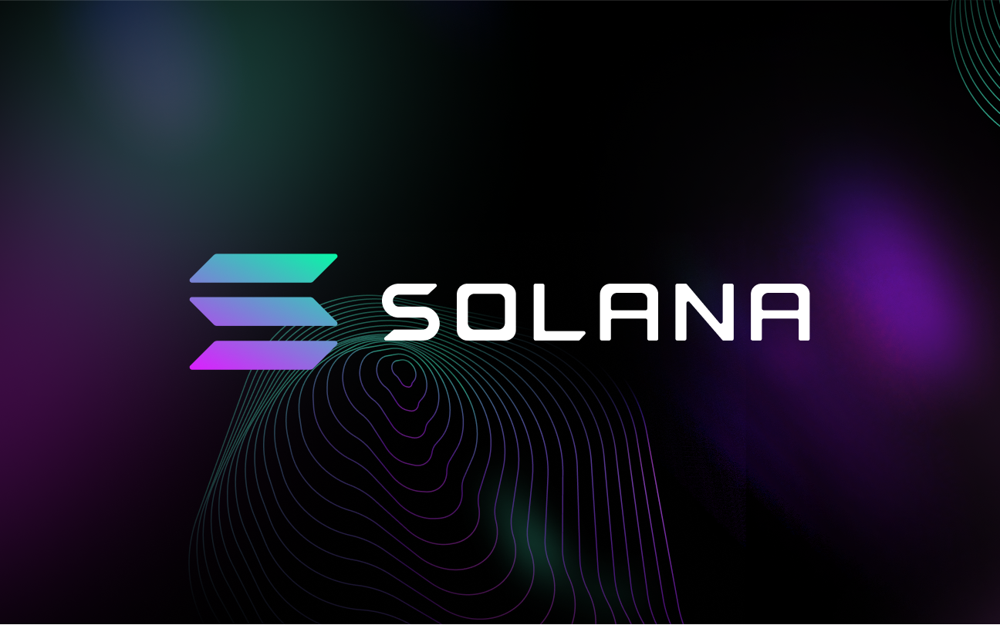
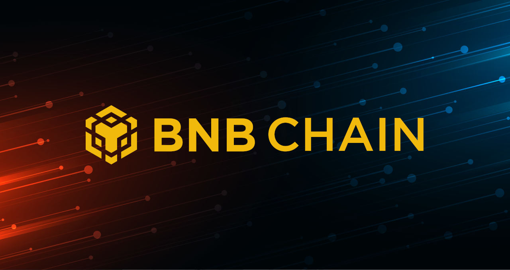
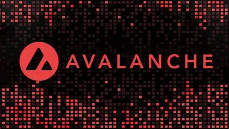

BTC y ETH no lo son todo
Layers 1 y 2
Las redes se dividen en Capas (Layers) principalmente para resolver el Trilema
Blockchain: un concepto que dice que es casi imposible que una red de bloques sea
descentralizada, segura y escalable al mismo tiempo.
Redes de capa 1
Una red de capa 1 es un blockchain principal e independiente.
Ejemplos: Bitcoin, Ethereum, Solana, BNB Chain, Monero, etc.
La función? Mantener el "libro mayor", ejecutar consensos (como Proof of Work)
garantizando la seguridad global y líquida las transacciones.
El problema de la capa 1:
Para que una red de capa 1 como Ethereum sea extremadamente
segura y descentralizada, debe mantener ciertos límites.
No puedes hacer que los bloques
sean gigantescos o muy rápidos, porque solo las supercomputadoras de grandes
empresas podrían procesarlos, perdiendo la descentralización.
Como consecuencia, Ethereum solo puede procesar unas 15 a 30 transacciones por
segundo (TPS). Cuando millones de personas quieren usar la red al mismo tiempo, las
comisiones (gas) se disparan en precios.
L1 y L2 significan Layer 1 y Layer 2. Lo voy a abreviar porque me cansa escribir mucho texo
Redes de capa 2
Es una red secundaria construida encima de una L1. Su objetivo es asumir el trabajo
pesado para descongestionar a la L1.
¿Cómo funciona técnicamente una L2?
Para explicarlo, pondré el ejemplo de la red L2 más popular en Ethereum que se llama
Rollup:
1. Ejecución fuera de la L1 principal (Ethereum): Tú haces una transacción en la L2
(por ejemplo, intercambias un token). La L2 procesa tu transacción en milisegundos
y cobra un centavo de dólar.
2. Empaquetado: La L2 toma tu transacción junto con miles de transacciones de otros
usuarios y las "comprime" en un solo paquete de datos.
3. De regreso a la L1: La L2 envía ese paquete comprimido y una prueba matemática
a la red principal de Ethereum. Ethereum valida la prueba y guarda el paquete con
toda la seguridad de su red.
Redes de capa 1
No hay mucho que decir aquí. Ya te expliqué sobre la Bitcoin y Ethereum.
Aunque hay muchas redes de blockchain (más de 1000) y criptomonedas.
Por ejemplo: Solana (SOL), BNB Chain (BNB), TRON (TRX), Avalanche (AVAX), Cardana (ADA),
SUI (SUI), Aptos (APT), Near (NEAR), Kaspa (KAS), Monero (XMR), etc.
Debido a eso, solo pondré algunas de las más conocidas y usadas:
Solana (SOL)

La red de blockchain se llama Solana y la criptomoneda se llama SOL.
Fue diseñada para procesar transacciones digitales a alta velocidad y con costes muy bajos. Fue creada en 2017 por Anatoly Yakovenko y lanzada oficialmente en 2020 con el objetivo de competir directamente con Ethereum.
Parecido a Ethereum, puedes crear aplicaciones descentralizadas (dApps), finanzas cripto (DeFi), coleccionables (NFTs) y sistemas de pagos.
¿Cuál es su innovación?
Mientras que redes como Bitcoin o Ethereum pueden volverse lentas o demasiado caras en momentos de alto tráfico, Solana resuelve esto combinando dos mecanismos de consenso principales:
- Proof of History (PoH): En lugar de que todos los nodos de la red tengan que ponerse de acuerdo constantemente sobre la hora exacta en que ocurrió cada transacción, PoH adjunta una marca de tiempo inmutable antes de procesarla. Esto reduce drásticamente el tiempo de verificación.
- Proof of Stake (PoS) Delegado: Validadores distribuidos por todo el mundo aseguran la red procesando los bloques organizados previamente por el reloj de PoH.
Gracias a todo esto, la red Solana ofrece:
- Buen rendimiento: Tiene la capacidad de decenas de miles de transacciones por segundo.
- Confirmación casi instantánea: Transacciones liquidadas en menos de un segundo.
- Tarifas mínimas: Un promedio inferior a $0.001 por transacción.
Considero que el único desafio son los requisitos de hardware (tu computadora o nodo) elevados: Ejecutar un nodo validador completo requiere equipos costosos, lo que genera debates sobre su nivel de descentralización en comparación con otras redes ya que no todas las computadoras pueden procesar la información.
BNB Chain (BNB)

BNB Chain nació impulsado por Binance (el exchange de criptomonedas más grande del mundo) por lo que se pensó que iba a ser centralizado pero hoy en día opera como una red descentralizada comunitaria enfocada en la economía Web3, videojuegos, finanzas descentralizadas (DeFi) y almacenamiento.
Su arquitectura:
1. BNB Smart Chain (BSC): Es la red principal (capa 1) donde se ejecutan las aplicaciones descentralizadas (dApps), los juegos y los protocolos DeFi.
2. opBNB (Capa 2): Una solución de escalabilidad basada en Optimistic Rollups. Permite procesar más de 4,000 transacciones por segundo con comisiones inferiores a $0.001 USD. Explicare más sobre Optimistic Rollups en el siguiente módulo (Layer 2).
3. BNB Greenfield: Es una red descentralizada diseñada para el almacenamiento seguro de datos e archivos en la Web3, integrada directamente con los contratos inteligentes de BSC.
A diferencia de Bitcoin (que usa minería) o Ethereum (que usa Proof of Stake tradicional), BNB Chain emplea un sistema híbrido llamado Proof of Staked Authority (PoSA):
1. Hay menos validadores: La red es mantenida por un número limitado de validadores activos que rotan y validan los bloques.
2. Los validadores y delegadores bloquean (hacen staking) de sus tokens BNB como garantía para mantener la red segura.
3. Este modelo permite tiempos de bloque de unos 3 segundos y comisiones muy bajas. El problema es que, al haber menos validadores, la convierte en una red más centralizada que Ethereum o Bitcoin.
Avalanche (AVAX)

Fue lanzada en septiembre de 2020 por la empresa Ava Labs y fue diseñada para ofrecer escalabilidad, seguridad y descentralización de forma simultánea.
Es conocida principalmente por su capacidad de procesar miles de transacciones por segundo con una finalización casi instantánea (menos de 1-2 segundos) y comisiones de red muy bajas.
Su arquitectura:
1. X-Chain (E xchange Chain): Se encarga de la creación, gestión e intercambio de activos digitales y tokens (incluyendo AVAX que es la moneda nativa de Avalanche).
2. C-Chain (Contract Chain): Es la cadena donde se ejecutan los smart contracts y las dApps. Lo chevere aquí es que es totalmente compatible con la EVM (Ethereum Virtual Machine), lo que permite a los programadores de Ethereum migrar sus apps fácilmente.
3. P-Chain (Platform Chain): Coordina los nodos validadores, rastrea la actividad de la red y permite la creación de nuevas cadenas personalizadas.
Mecanismo de concenso:
El gran avance de Avalanche es su novedoso mecanismo de consenso. En lugar de usar la minería tradicional (Proof of Work) o la votación clásica de Proof of Stake (donde cada nodo habla con todos los demás), Avalanche utiliza un sistema de muestreo subconjunto aleatorio. Aquí te lo explico:
Cuando un nodo necesita validar una transacción, le pregunta a un pequeño grupo aleatorio de otros nodos. Si la mayoría coincide, el nodo adapta esa decisión y repite la pregunta a otro grupo. Este proceso se expande en cascada a través de toda la red rápidamente hasta alcanzar un consenso casi instantáneo sobre el estado final.
También debería explicar la red Monero cuya moneda es XMR pero eso lo haré aquí ya que es una moneda con un propósito muy diferente a las demás (privacidad) pero, por ahora, continuemos.
Comparativa entre las 3 redes L1 que hemos aprendido:
| Criterio | Solana | BNB Chain | Avalanche |
|---|---|---|---|
| Mecanismo de Consenso | PoH + PoS | PoSA (Proof of Staked Authority) | Consenso Avalanche (Probabilístico) |
| Suministro Máximo de Cripto Nativa | Sin Límite (Infinito) | 200 Millones | 720 Millones |
| Tiempo hasta Finalidad | ~400 ms | ~3 segundos | < 1 segundo |
| Velocidad de Transacción (TPS) | 65,000+ TPS | ~2,000 TPS | 4,500+ TPS |
| Ventajas | Velocidad extrema, costos muy bajos, ecosistema grande (DeFi, nuevas herramientas, etc) | Alta liquidez, rápido comparado con Ethereum, compatible con EVM, modelo deflacionario (su mecanismo "quema" BNB) | arquitectura de subredes (permite que la gente cree su propia blockchain personalida), compatible con EVM, alta tolerancia a fallos (dificilmente tiene errores), es rápido (menos de 1 segundo) |
| Comisión Promedio | ~$0.00025 USD | ~$0.10 USD | ~$0.05 USD |
| Desventajas | Validadores costosos (el costo de hardware para los nodos es alto), ha experimentado caídas cuando hay mucho tráfico, menos validadores (mas centralizado) ya que hay menos validadores por el costo de hardware | Mucha centralización ya que hay muy pocos validadores activos (21 a 40 aprox) y eso aumenta el riesgo a censura, las tarifas pueden incrementarse temporalmente cuando el mercado registra una actividad inusualmente alta | Dividir la red en múltiples subredes puede fragmentar el capital y a los usuarios, en momentos de alta demanda puede ser más costoso que en Solana, su ecosistema empresarial de subredes todavía está en proceso por lo que su ecosistema es chico aún. |
| Lenguaje para Smart Contracts | Rust, C, C++ | Solidity | Solidity, Go |
Te has dado cuenta que en el cuadro dice que la moneda SOL de Solana no tiene un
límite a diferencia de las otras o Bitcoin que tiene solo 21 millones?
Esto se debe a que Solana contrarresta la creación de nuevos tokens.
Solana implementa un mecanismo deflacionario: el 50% de cada comisión de
transacción realizada en la red es quemada (destruida para siempre).
- Si la red tiene poco uso: La emisión de staking aumenta ligeramente el suministro
total para seguir manteniendo seguros a los validadores.
- Si la red se usa masivamente: La cantidad de transacciones quema tanto SOL que la
inflación neta se frena drásticamente.
Otra cosa más que quiero comentar es que: Si no eres programador, tal vez no entiendas
lo último sobre los lenguajes para smart contracts.
Rust, C++, C, Solidity, Go, etc son lenguajes de programación y sirven para crear
aplicaciones, programas de celular, etc.